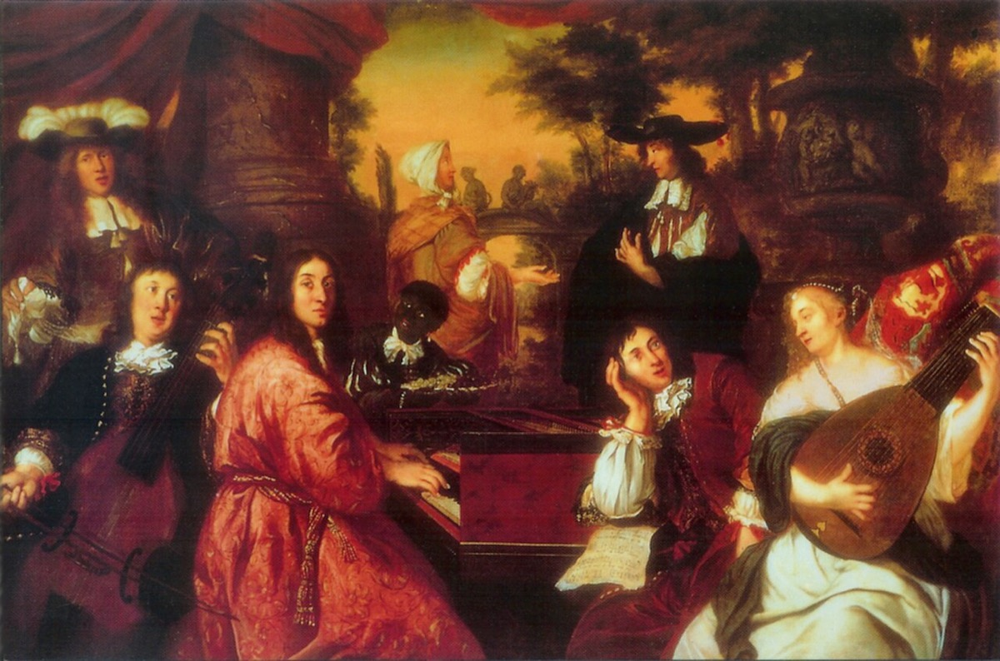

Hamburg: Reincken's blessing, and the job that went to the highest bidder

Four months after burying his wife, Bach traveled north — two hundred miles north, to Hamburg, the great free port city where he had walked as a Lüneburg schoolboy to hear the organists. The official occasion was a job: the organist's post at the Jacobikirche stood vacant, one of the plum church positions of northern Europe, with a famous four-manual instrument attached. But it is difficult, reading the itinerary against the summer's grief, not to see something more personal in the journey: a widower of thirty-five testing whether the city of his youth, and the instrument of his first vocation, might offer a different life than the one that had just broken in Cöthen.
What happened in Hamburg became one of the founding legends of the Bach literature, and unusually, most of it holds up. Before an audience that included Johann Adam Reincken — organist of St. Catherine's for over half a century, last living patriarch of the great north-German school, and by the era's reckoning nearly a hundred years old — Bach played at length, and then improvised on the chorale An Wasserflüssen Babylon, "By the waters of Babylon," for almost half an hour, in the sprawling, many-voiced fantasia manner that had been Reincken's own signature since before Bach was born. He could not have chosen the tribute more precisely: Reincken's masterpiece was a monumental fantasia on that very chorale — the same work, we now know from a manuscript identified in 2006, that a fifteen-year-old Bach had copied out by hand in Georg Böhm's house twenty years earlier. The apprentice had returned, and the homage was twenty years deep, though Reincken almost certainly never knew it.
The old man's reply, as the Obituary preserves it, is the great torch-passing sentence of the German organ tradition: "I thought this art was dead, but I see that it lives on in you." The scene comes to us polished by family retelling — the Obituary's authors loved a good benediction — and the timeline flags its details as tradition accordingly. But Reincken's presence, the church, the chorale, and the visit itself are secure, and even skeptics concede the essential transaction: the seventeenth century, in the person of its last great organist, recognizing its heir.
Then came the other Hamburg lesson, the one the legend usually omits. Bach did not get the Jacobikirche post — or rather, he declined to compete for it on the terms offered, which were financial in the frankest possible sense. The church's practice, common enough in wealthy Hamburg, expected the successful candidate to make a substantial "voluntary" contribution to the parish treasury. The post went to one Johann Joachim Heitmann, an organist history remembers for nothing else, who expressed his gratitude to the tune of four thousand marks. The affair was scandalous enough that a prominent Hamburg pastor, Erdmann Neumeister — a figure of some importance to church music himself, as it happens — thundered from his Christmas pulpit that if one of the angels of Bethlehem came down from heaven and played divinely but had no money, he might as well fly away again. The sermon found its way into print, which is why we have it: the eighteenth century's own verdict on the eighteenth century.
So the journey ended where it began, and the two Hamburgs Bach encountered in one November stand as the twin poles of his professional world, held in a single frame. In one church, the deepest artistic lineage in his tradition laid its hands on him. In another, a job he could have transfigured was sold across a counter. He went home to Cöthen, to his children and his prince, and within a year had rebuilt his life there instead. The art was not dead. The market was exactly what it had always been. Bach, who never confused the two again, kept working.
Continue with the era essay: Cöthen — the instrumental golden age, or trace the lineage back: the tablatures at Böhm's house.
The Obituary (Nekrolog), 1754 (New Bach Reader)
Hamburg church records on the Jacobikirche vacancy (New Bach Reader)
Wolff, The Learned Musician, ch. 7
→ full bibliography & links